AI Governance
AI governance for teams that can't afford to guess
Move from scattered AI use to visible controls, clear ownership, and audit-ready governance designed for regulated fintech environments.
Trusted by leading fintech teams
The Problem
AI is everywhere in your organisation Governance isn't
Engineers are using Copilot and ChatGPT daily. Customer support has AI assistants.
Shadow AI is already running
Teams adopt AI tools faster than policies can keep up. Unsanctioned tools process customer data, generate code that goes into production, and make decisions that affect end users with no oversight and no audit trail.
Regulators are moving faster than you think
The EU AI Act is in force. ISO 42001 is the new governance standard. DORA demands operational resilience including for AI systems. If your answer to "how do you govern AI?" is a blank stare, that's a problem with a deadline attached.
A security incident is a matter of when, not if
Prompt injection, data leakage through AI APIs, and model hallucinations in customer-facing systems aren't theoretical risks. Without proper controls, your AI tools are an open attack surface that nobody is monitoring.
What We Cover
Seven Domains End to End
The framework covers everything from risk classification to shadow AI detection. Each domain maps directly to ISO 42001, NIST AI RMF
AI Risk Management
Identify and classify every AI system by risk level. Build a risk register, run mandatory impact assessments for high-risk AI, and put vendor due diligence in place for third-party tools.
ISO 42001 6.1 & 8.4 · NIST AI RMF: Map & MeasureAI Security, Data Privacy & Protection
Test your AI systems against the OWASP LLM Top 10. Run adversarial and prompt injection testing. Harden models, lock down access controls, and implement DLP.
ISO 42001 6.1 & 8.4 · OWASP Top 10 for LLMsModel, Tool & Lifecycle Governance
Stage-gates from design through deployment to decommission. Version control, model cards, documentation standards, and a clear change management process.
ISO 42001 8.3 · NIST AI RMF: Govern & ManageRegulatory Alignment
Clause-by-clause gap mapping against ISO 42001, NIST AI RMF, EU AI Act, and GDPR. Audit-ready evidence packs and compliance reporting that your regulators will actually accept.
ISO 42001 · NIST AI RMF · EU AI Act · GDPRHuman-in-the-loop Controls
Mandatory human review for high-risk AI decisions. Override and escalation mechanisms for critical outputs. Full audit trail linking every AI-assisted decision to a responsible person.
ISO 42001 8.6 · NIST AI RMF: Govern & ManageData Governance, Lineage & DLP
Track data from source through training to output. Detect data poisoning, mask PII, and enforce retention and deletion policies including right-to-erasure compliance.
ISO 42001 8.4 · GDPR · NIST AI RMF: GovernShadow AI Management
Discover and inventory every unsanctioned AI tool in your organisation. Risk-score each one. Enforce an Acceptable Use Policy and roll out awareness training.
ISO 42001 8.2 · NIST AI RMF: Map
What We Build
Eleven deliverables No ambiguity
Every engagement produces a defined set of reports, assessments, and action plans.
AI Risk Visibility & Safe-Use Baseline
A complete inventory of every AI tool, model, and system in use and whether the basics are in place to use them safely.
Regulatory & Compliance Gap Report
Where your AI practices fall short of what regulators expect, mapped against ISO 42001, NIST, and EU AI Act requirements.
Model & Application Integrity Review
How your AI models were built, trained, and deployed and whether there are hidden risks in the process.
Data Privacy & Protection Assessment
Whether the data going into your AI (and coming out of it) is handled safely, especially sensitive or personal information.
Responsible AI Risk Findings
Whether your AI makes fair, explainable decisions and whether humans are properly in the loop to catch mistakes.
AI Security Risk Assessment
How secure your AI is against prompt manipulation, data leakage, API abuse, and unauthorised access.
Third-Party & Supply Chain AI Risk Report
The external AI tools, platforms, and vendors you rely on and the hidden risks that come with them.
AI Governance & Controls Recommendations
Practical policies, roles, and processes your team should put in place to govern AI responsibly going forward.
AI Monitoring & Audit Readiness Check
Whether you have the right logging and alerts in place to catch problems early and satisfy auditors.
Prioritised Remediation Roadmap
A step-by-step action plan ranked by risk: what to fix first, what can wait, and how to get there.
Executive Summary for Leadership
A jargon-free briefing covering your overall AI risk position and the top actions leadership needs to take.
Delivery Cadence
Initial assessment
All eleven deliverables produced in the first engagement. Typically eight to twelve weeks.
Recurring reviews
Annual full reviews. Bi-annual security retests. Quarterly monitoring health checks.
Trigger-based updates
New AI deployments, regulatory changes, or incidents trigger targeted reassessments on demand.
How We Build
Twelve months to full governance
We don't build prototypes that need to be rebuilt for production. Every platform is architected for the transaction environment.
Foundation
AI inventory and risk classification. Shadow AI audit. Appoint governance roles and human-in-the-loop reviewers. Draft Acceptable Use Policy and launch awareness programme.
Controls & security
VAPT and OWASP LLM Top 10 testing. Data governance, DLP controls, and lineage mapping. Model lifecycle stage-gates and third-party risk management to the reviews.
Monitoring & awareness
Deploy observability and drift detection stack. AI awareness training for all staff. Human-in-the-loop workflows, incident drills, and Acceptable Use Policy enforcement.
Audit & compliance
ISO 42001 and NIST AI RMF gap audit. OWASP LLM control review. Regulatory compliance review. Publish AI Transparency Report and set next-cycle objectives.
Why Panasa
Why Fintechs Choose Panasa
What sets us apart in the fintech development landscape

Payment Experts, Not Generalists
20+ years building card platforms, not generic software. We speak authorization flows, 3DS, and scheme integrations fluently.

Proven at scale
Supporting platforms processing 10M+ transactions monthly. We've been there, scaled that.

Full-Stack Team
From strategy to 24x7 ops-no vendor juggling needed. One team, end-to-end ownership.

Compliance-First Approach
ISO 27001 certified, PCI-DSS aligned, GDPR compliant. Built-in audit readiness from day one.
Who This Is For
Fintechs that use AI and need to prove they control it
We don't build prototypes that need to be rebuilt for production. Every platform is architected for the transaction environment.
Regulated fintechs preparing for EU AI Act or DORA obligations
CTOs and compliance leads who need audit-ready AI governance
Engineering-led organisations with growing AI tool adoption
PE-backed fintechs where investors are asking about AI risk
How We Engage
Assessment
Eight to twelve week initial governance review.
Implementation
Twelve month framework rollout.
Ongoing assurance
Quarterly monitoring and annual reviews.
Incident response
On-demand reassessment after AI incidents.